1. Tactical map
The map has three display modes: no hexagonal grid, a semitransparent grid and an opaque grid. All modes show zone ownership; the front-line zone is yellow.
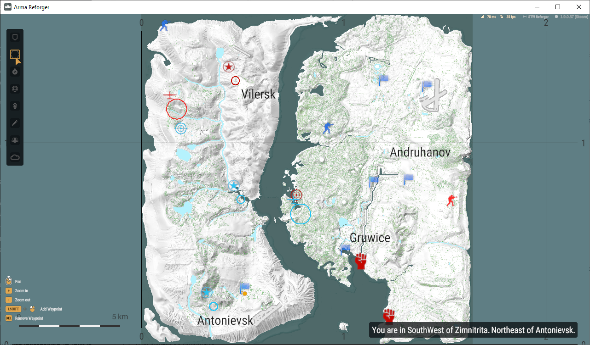
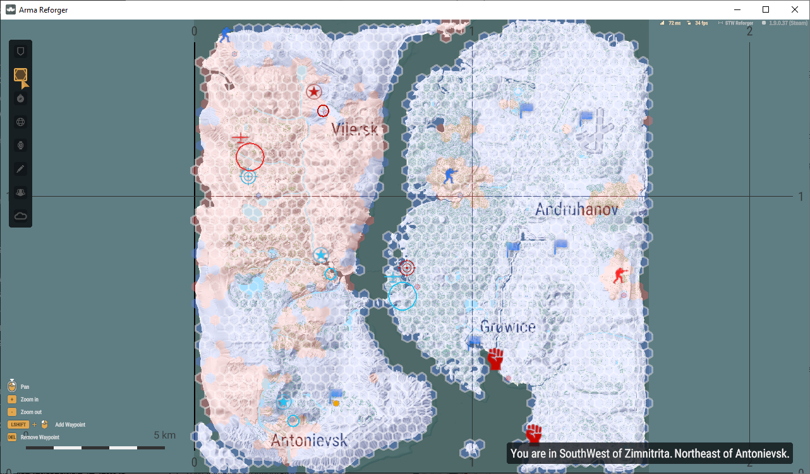
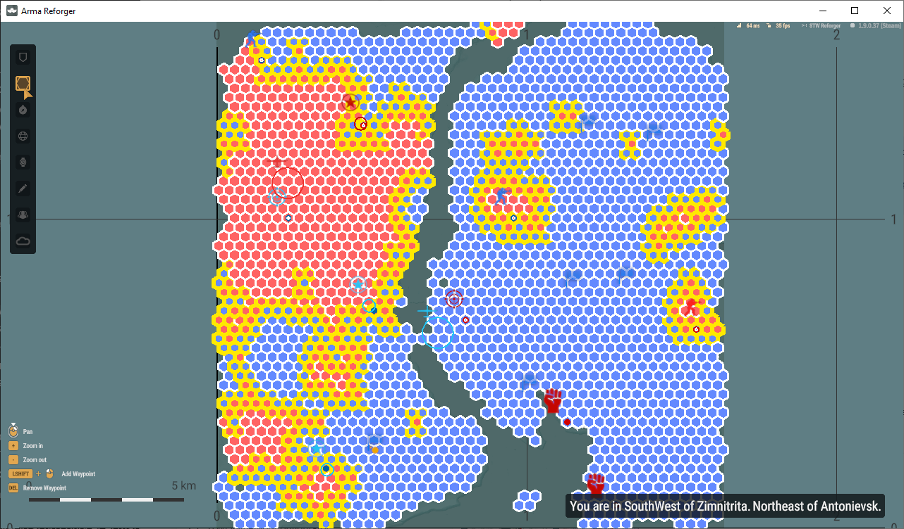
The enemy has more surveillance information in its own zones and can infer player positions more easily in enemy territory or at the front. Border zones are likely to be mined, especially military bases and strategic points.
2. Dynamic campaign
Faction-coloured icons identify ownership. Friendly troops also fight and take positions over time, which makes the map dynamic.
A mission occupies a zone for a limited time. When the timer expires, success is calculated from the time held and faction morale. Morale depends on political, economic, social and temporal conditions. If the zone is not captured before the deadline, it is highly likely to change sides.
Occupation speed varies. Special Forces can capture a position within a few hours, so their presence requires an immediate response.
3. Mission types
Strongholds
The defending army occupies buildings, places marksmen, runs infantry and vehicle patrols, and establishes roadblocks. Occupied buildings provide resistance and must be cleared in place. Attackers must take the stronghold before the timer expires.
The victory percentage is the percentage of forces that must be eliminated; it is not the total number of troops. Enemies may remain after victory, so extraction can still be dangerous.
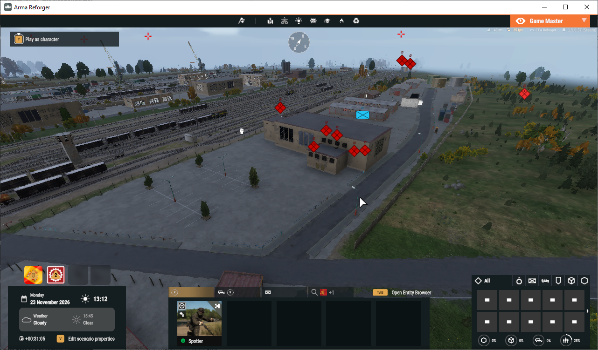
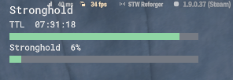
Close Quarters Battle - CQB
Friendly and enemy troops occupy city streets and buildings. Hold the zone for the occupation time and inflict the required enemy casualties. The enemy can remain after both conditions are met; plan the extraction accordingly.
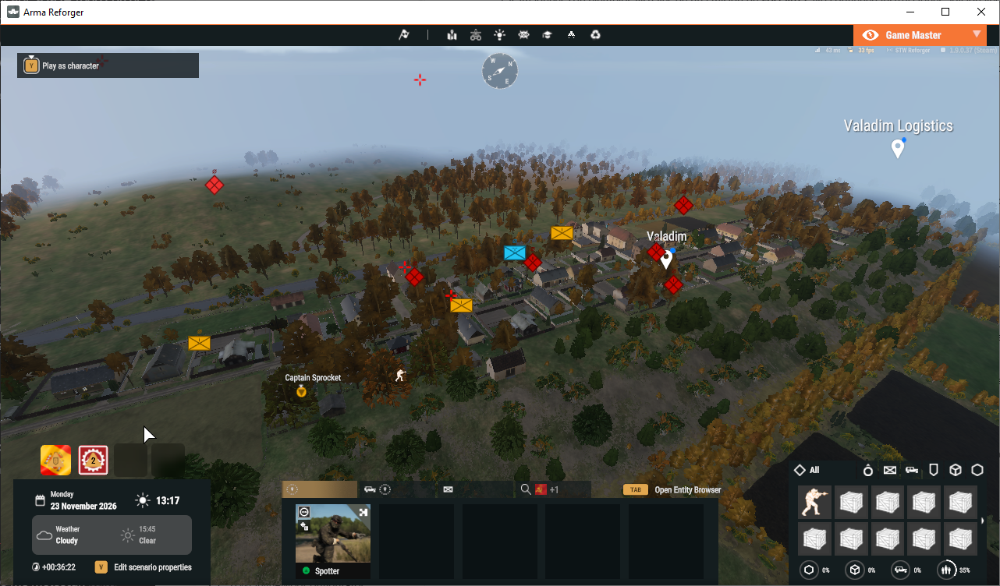
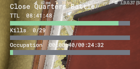
Special Forces
The objective is to eliminate every member of the group. Special Forces are highly equipped and can deploy a drone. If it detects the attackers, the unit knows their position and begins harassment. One operator controls the drone; if that operator is killed, the drone loses control and crashes.
Drones cannot enter forests or buildings. If detected, flee and hide. This also applies to an air-superiority drone.
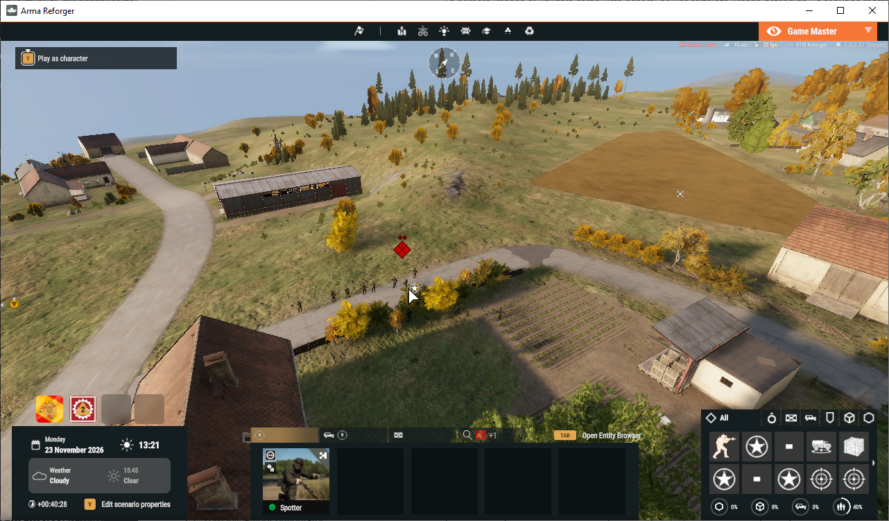
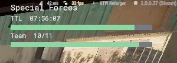
Battle Zones
Battle Zones attract many friendly and enemy troops. Their objective is to inflict enough enemy casualties.
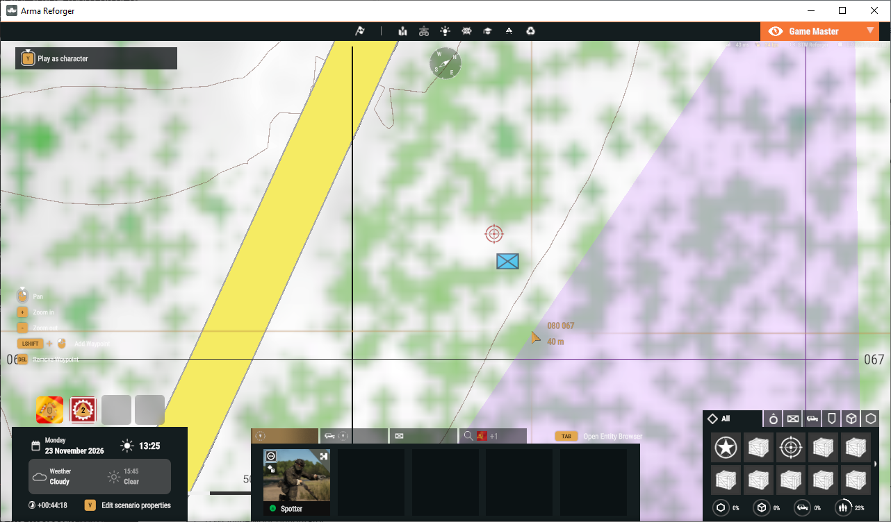
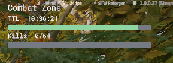
4. Aerial surveillance and drone reconnaissance
Enemy aerial surveillance
The surveillance drone searches for enemy troops. Detection triggers a warning that the group is under surveillance and greatly increases the risk of mortar fire, CAS, troop insertions and enemy reinforcements.
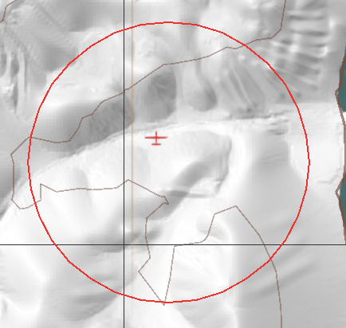
Results of an allied drone scan
The following image shows the result of invoking the allied drone over a selected area. The scan reveals tactical information and contact markers inside that area, allowing the player to assess friendly and enemy activity before moving or requesting support.
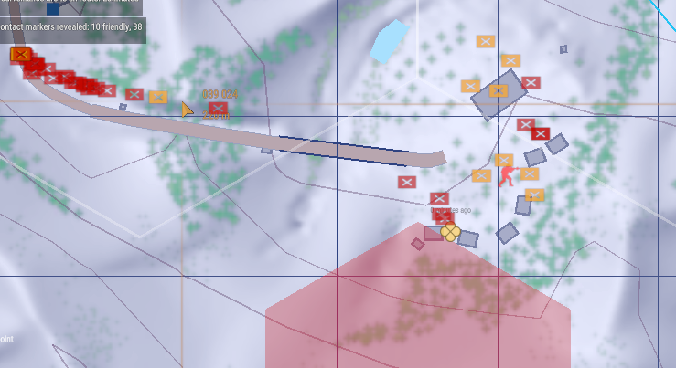
5. Command wheel
Deployment
Use the wheel to request parachute deployment of vehicles and crates with varied contents.
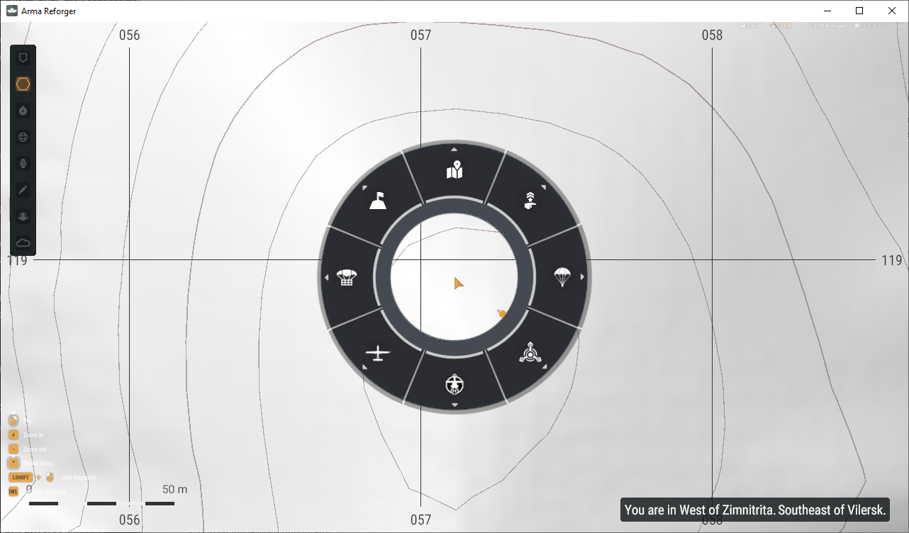
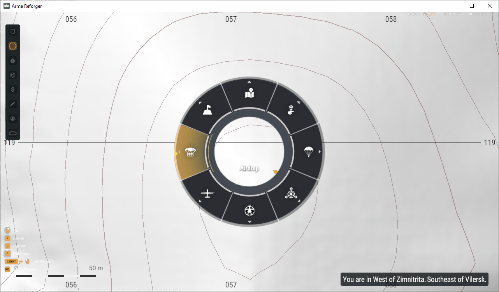
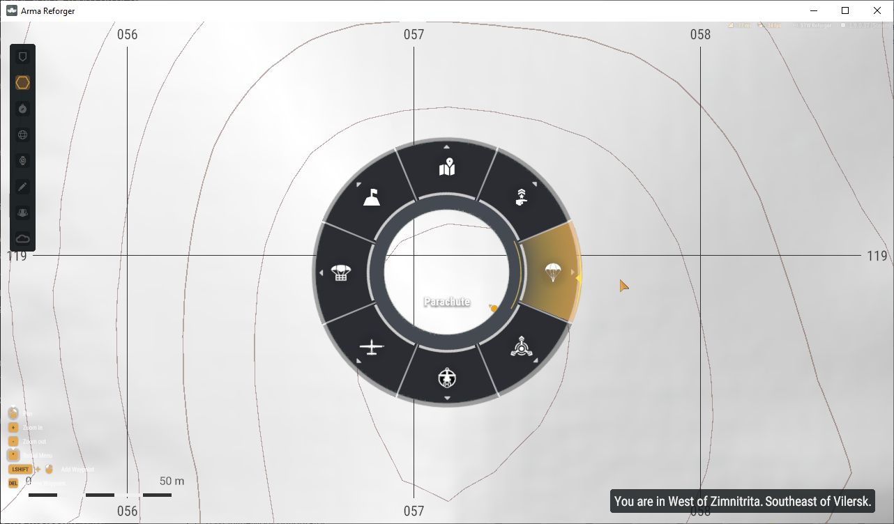
Reconnaissance
Request a drone scan to obtain tactical information about a selected area.
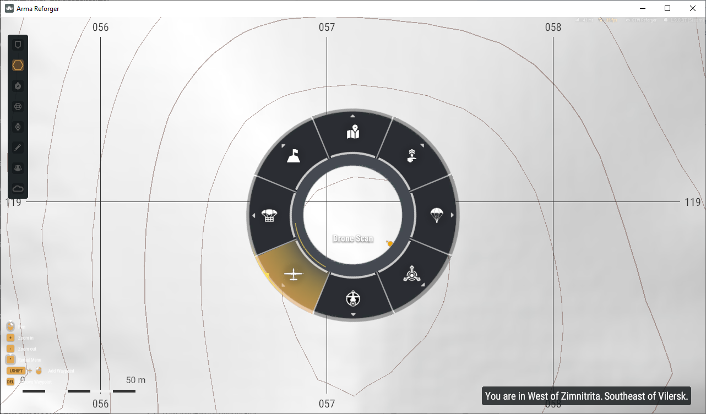
Transport and insertion
Request helicopter transport from pickup point A to destination B. Transport supports rope insertion where possible, and the wheel can also request helicopter insertion troops.
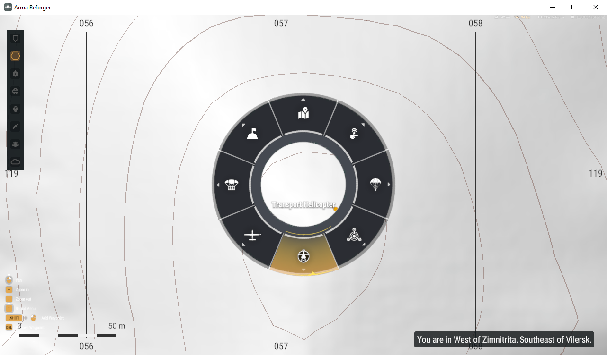
Combat support
Request CAS, combat vehicles, APCs, jeeps and tanks. Mortar support includes explosive rounds, smoke rounds and illumination flares.
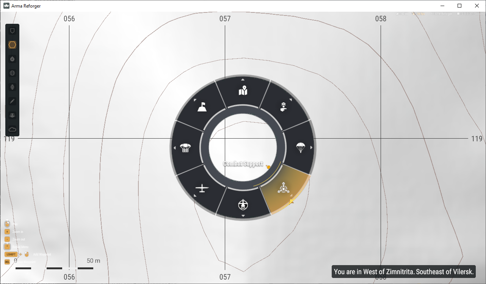
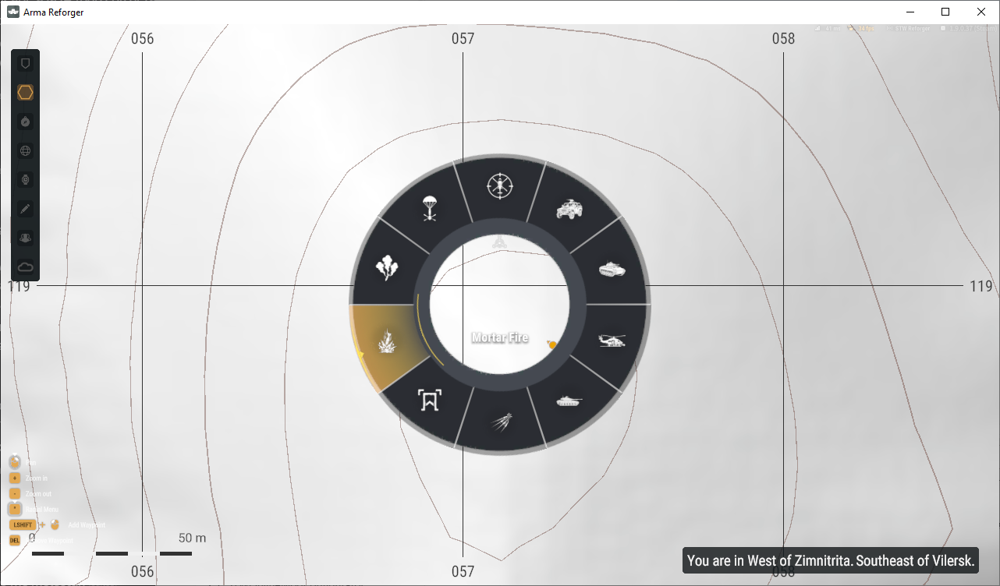